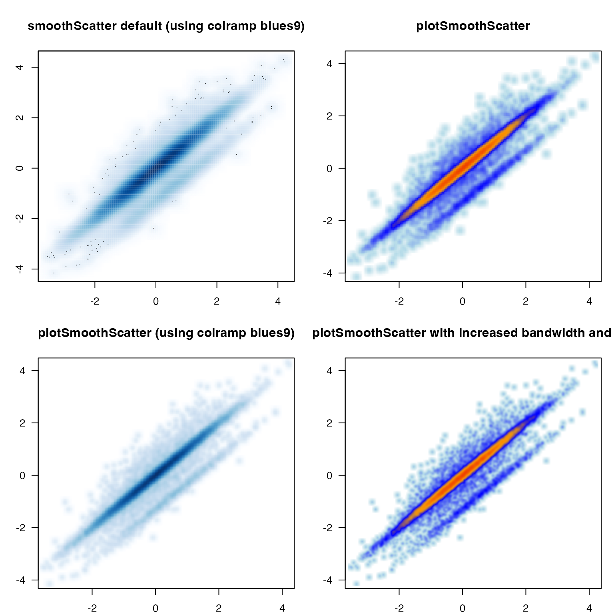
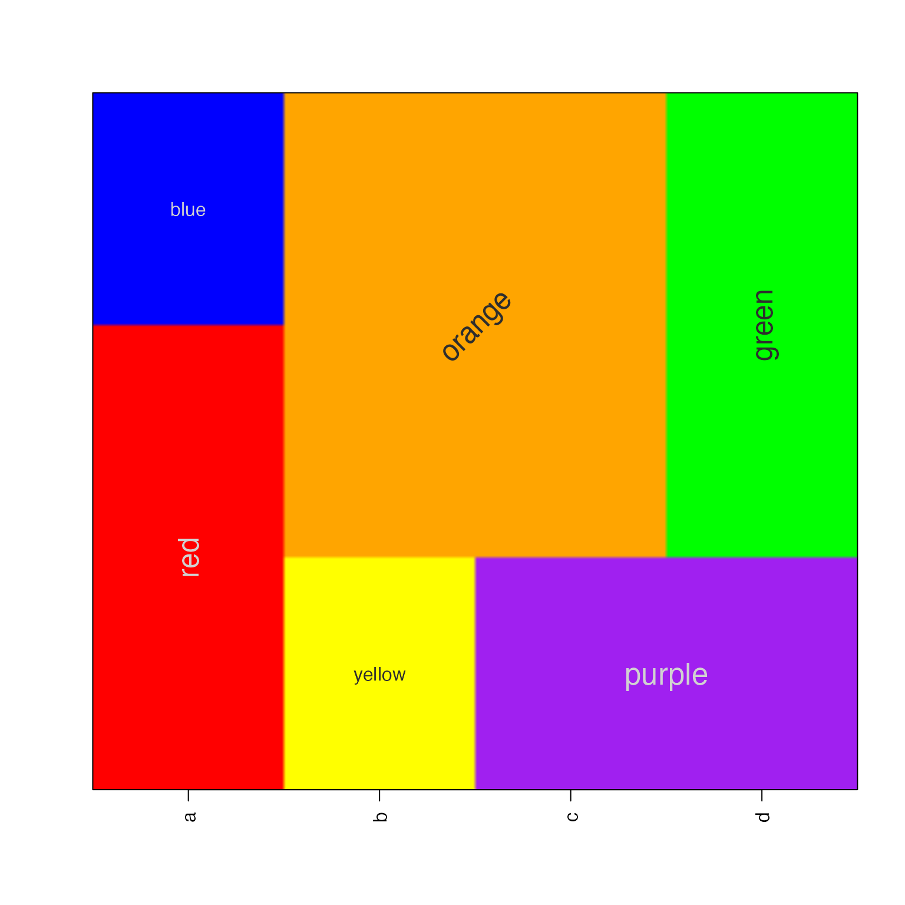

Jamba is intended to contain JAM base functions, to be re-used during analysis, and by other R packages. Functions are broadly divided into categories.
A common problem when visualizing extremely large datasets is how to display thousands of datapoints while indicating the amount of overlap of those points. The R graphics::smoothScatter() function provides an adequate drop-in replacement for most uses of plot(), but several aspects are not easily customized and are targeted by the jamba::plotSmoothScatter() function.
First, the useRaster=TRUE feature from graphics::image() is intended to enable rasterized images instead of rendering multiple polygons. The rasterized image saves substantial image space, is more efficiently saved as vectorized output in PDF and SVG, and is more efficiently displayed on a remote plot device. However it is not consistently honored, and has some problem when the plot aspect ratio is not 1:1. The plotSmoothScatter function consistently enforces useRaster=TRUE by calling a custom jamba::imageDefault() function, which has methods to handle non-square visualization.
A quick way to see some enhancements of plotSmoothScatter is by running doTest=TRUE:
plotSmoothScatter(doTest=TRUE);
The data represents a highly correlated x- and y-axis, with a secondary “band” of correlation added slightly offset. Each row contains an increasing amount of background noise.
The left column shows graphics::smoothScatter, using the same color ramp used by plotSmoothScatter. The secondary “band” is somewhat obscured by the default density function. The second and third columns show the effect of using custom bandwidth in plotSmoothScatter.
Also, while smoothScatter displays 50 points on the extremes by default, in order to show the range of data which may otherwise not be visible, the bandwidth function in plotSmoothScatter typically displays the full extent of the data without these additional points.
The imageByColors() function is intended to take a matrix or data.frame and create the equivalent of image(). It also displays cell labels when supplied in an equivalent matrix or data.frame, by default combining adjacent labels so only one label is displayed in the middle of a contiguous range of cells.
This function is particularly useful when displaying something like experiment design, where each factor level in the experiment has been assigned a color.
Here, we define a simple data.frame composed of colors, then use the data.frame to label itself:
a1 <- c("red","blue")[c(1,1,2)];
b1 <- c("yellow","orange")[c(1,2,2)];
c1 <- c("purple","orange")[c(1,2,2)];
d1 <- c("purple","green")[c(1,2,2)];
df1 <- data.frame(a=a1, b=b1, c=c1, d=d1);
imageByColors(df1, cellnote=df1);The imageByColors() function calls imageDefault() which obeys the useRaster=TRUE directive. It attempts to correct for blurriness in the output, with the benefit of efficiency in rendering.
Lastly, the labels can be rotated and resized, to allow flexibility in positioning labels as needed in the final plot. Below we render a rasterized image, showing text rotated and adjusted in various ways.
imageByColors(df1, cellnote=df1, useRaster=TRUE, adjBy="column",
cexCellnote=list(c(1.5,1.5,1), c(1,1.5), c(1.6,1.2), c(1.6,1.5)),
srtCellnote=list(c(90,0,0), c(0,45), c(0,0,0), c(0,90,0)));
The gtools package implemented a function mixedsort() which aimed to mixedSort vectors similar GNU version sort, where numeric values within an alphanumeric string would be sorted in proper numerical order.
The mixedSort() function is an optimization and extension, driven by the desire to sort tens of thousands of gene symbols (and micro-RNAs, miRNA) efficiently and based upon known order. Also, because miRNA nomenclature includes a dash ‘-’ character, numbers are no longer allowed to be negative during this sorting algorithm, unless overridden. For example “miR-2” should sort before “miR-11”, and after “miR-1”.
| sort | gtools_mixedsort | mixedSort |
|---|---|---|
| miR-1 | miR-122 | miR-1 |
| miR-12 | miR-12 | miR-1a |
| miR-122 | miR-2 | miR-1b |
| miR-1a | miR-1 | miR-2 |
| miR-1b | miR-1a | miR-12 |
| miR-2 | miR-1b | miR-122 |
Note: it took roughly 12 seconds to sort 43,000 gene symbols using gtools::mixedsort, and roughly 0.5 seconds using mixedSort.
The mixedOrder() function is actually the core ordering algorithm, called by mixedSort(). The mixedOrder() function does not fully behave like order(), in that order() accepts a list of vectors as one type of input, and applies the order logic to each list iteratively, in order break ties. Instead the mmixedOrder() function was implemented to serve that purpose.
The mixedSortDF() function is a convenient wrapper around mixedSort() applied to data.frames. It sorts columns in a specified order, maintaining ties in each column, and breaking ties as warranted in subsequent columns. It has the added benefit of maintaining factor order, so a data.frame that contains a column of factors with a specified order will maintain that order during the sort process. This behavior is especially useful when sorting a data.frame with experiment design, where each column may contain an ordered factor indicating the proper sample group ordering.
x <- c("miR-12","miR-1","miR-122","miR-1b", "miR-1a","miR-2");
g <- rep(c("Air", "Treatment", "Control"), 2);
gf <- factor(g, levels=c("Control","Air", "Treatment"));
df2 <- data.frame(groupfactor=gf, miRNA=x, stringsAsFactors=FALSE);
df2sorted <- mixedSortDF(df2);| groupfactor | miRNA | |
|---|---|---|
| 6 | Control | miR-2 |
| 3 | Control | miR-122 |
| 4 | Air | miR-1b |
| 1 | Air | miR-12 |
| 2 | Treatment | miR-1 |
| 5 | Treatment | miR-1a |
When working with multiple R sessions, sometimes on different computers, it can be helpful to add visual cues to help reinforce which R session is for which project. The setPrompt() function is intended simply to update the R console prompt to include the project name. It also adds the R version, and optionally the process ID.
The process ID is particularly helpful if one R session becomes inactive, and if there are other active R sessions open. The process ID can be a helpful way to kill the specific R session without fear of accidentally killing the wrong one.
setPrompt() will also define the prompt using terminal colors, if the crayon package is installed, and if terminal colors are enabled.
setPrompt("jambaVignette");
# {jamba}-R-3.3.2_10789>setPrompt example
When using the jamsession R package to manage R sessions, the prompt is a helpful way to reinforce the name of the active R session, using the same name to save the session.